5 線形回帰分析
5.1 重回帰分析の基本操作
データ1: 1ルーム賃貸マンション
- 1ルーム賃貸マンション, 家賃データ, 50件 (仮想データ)
- rent: 月額家賃 (円)
- area: 専有面積 (平米)
- yrs: 築後年数 (年)
- dist: 最寄駅からの徒歩距離 (m)- データの読み込み, 回帰実行
rentdat <- read.csv("rentdat.csv", header = T)
head(rentdat)
#> rent area yrs dist
#> 1 60000 18.45 8.73 837.46
#> 2 61000 19.84 13.33 520.86
#> 3 74000 22.45 8.26 433.77
#> 4 77000 26.81 5.94 1192.32
#> 5 59000 17.62 3.85 815.17
#> 6 86000 26.68 4.19 373.87
pairs(rentdat)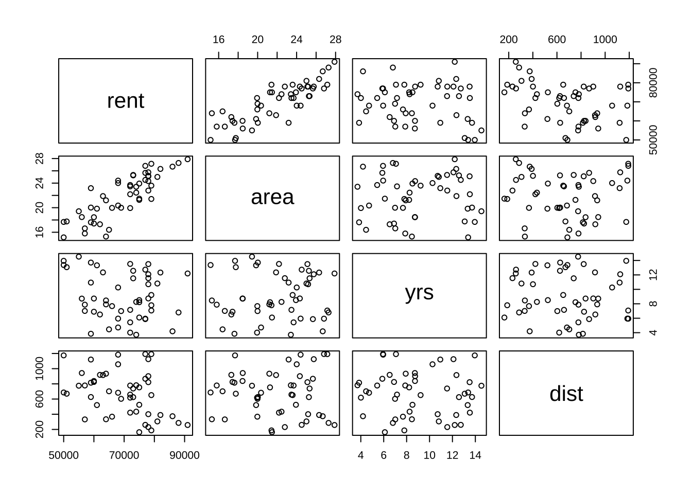
cor(rentdat)
#> rent area yrs dist
#> rent 1.0000000 0.84098526 -0.16885266 -0.36727009
#> area 0.8409853 1.00000000 0.05454398 -0.02291733
#> yrs -0.1688527 0.05454398 1.00000000 -0.05812975
#> dist -0.3672701 -0.02291733 -0.05812975 1.00000000
res_lm <- lm(rent ~ ., data = rentdat)
summary(res_lm)
#>
#> Call:
#> lm(formula = rent ~ ., data = rentdat)
#>
#> Residuals:
#> Min 1Q Median 3Q Max
#> -6732 -2379 -1016 2286 7256
#>
#> Coefficients:
#> Estimate Std. Error t value Pr(>|t|)
#> (Intercept) 32261.469 3652.405 8.833 1.81e-11 ***
#> area 2397.144 142.744 16.793 < 2e-16 ***
#> yrs -745.440 159.275 -4.680 2.55e-05 ***
#> dist -12.443 1.733 -7.180 4.89e-09 ***
#> ---
#> Signif. codes: 0 '***' 0.001 '**' 0.01 '*' 0.05 '.' 0.1 ' ' 1
#>
#> Residual standard error: 3531 on 46 degrees of freedom
#> Multiple R-squared: 0.8838, Adjusted R-squared: 0.8762
#> F-statistic: 116.6 on 3 and 46 DF, p-value: < 2.2e-16- モデル診断
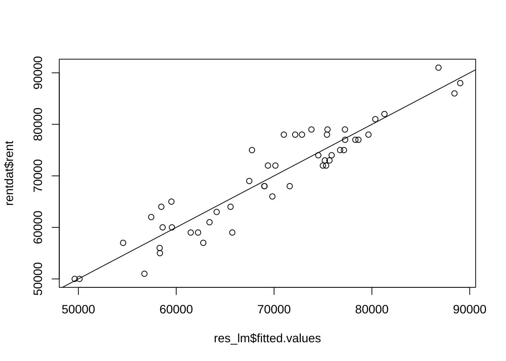
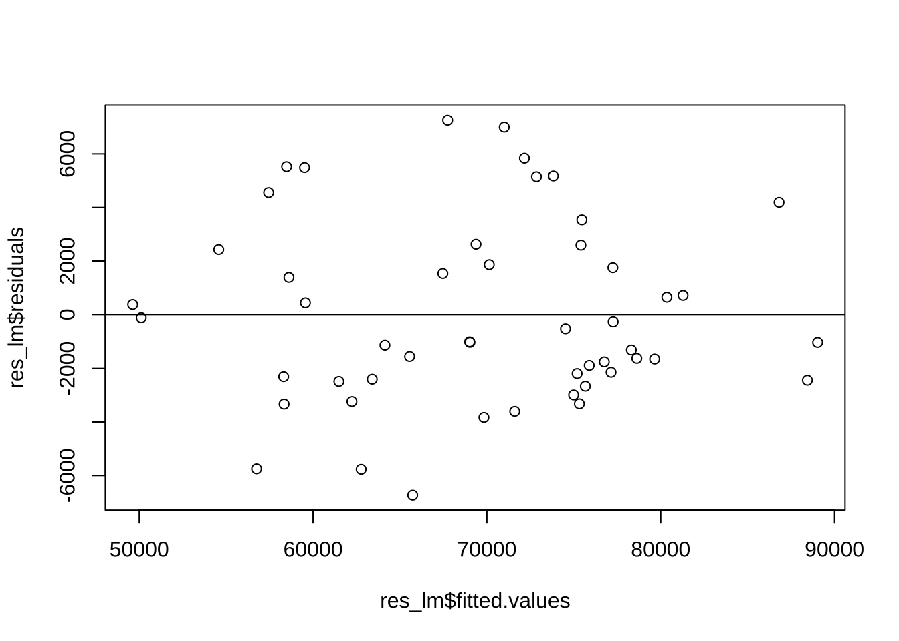
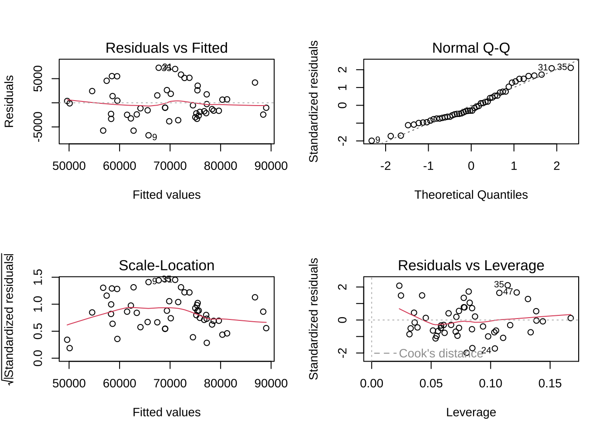
# # 標準(化)回帰係数、p.211 srentdat <- scale(rentdat)\t\t#
# scale()の返り値はリスト型 → データフレームへ変換 srentdat <-
# data.frame(srentdat) # sres_lm <- lm(rent ~ area + yrs + dist, data =
# srentdat) summary(sres_lm)
# # 偏回帰係数 vs 標準(化)偏回帰係数 summary(res_lm)['coefficients']
# summary(sres_lm)['coefficients'] # # 確認 attach(rentdat) y_sd <- sd(rent)
# x_sd <- apply(rentdat[, -1], 2, sd) res_lm$coef[ -1] * x_sd / y_sd- モデルを使った予測
- 専有面積=18.8平米, 築後年数=13年, 駅距離=800m, または100mの物件の賃料は?
5.2 変数の選択
データ2: ボストン市内住宅物件価格データ
- Boston Housingデータ
- crim: 町ごとの一人当たり犯罪率
- zn: 25,000平方フィート以上の住宅用地の割合
- indus: 町ごとの非小売業の土地の割合
- chas: チャールズ川のダミー変数 (川に接している場合は1, さもなくば0)
- nox: 窒素酸化物濃度（1000万ppm）
- rm: 1住居当たりの平均部屋数
- age: 1940年以前に建設された住戸の持ち家比率
- dis: ボストンの5つの雇用センターまでの距離の加重平均
- rad: 放射状高速道路へのアクセス指数
- tax: 10,000米ドル当たりの固定資産税率
- ptratio: 町ごとの生徒数・教師数比率
- b: 1000(B - 0.63)^2 (Bは町ごとの黒人の割合)
- lstat: 低所得者層の割合
- medv: 持ち家住宅の中央値（1000ドル単位）
- 506件 x 14変数 (オリジナル版)
- source: http://lib.stat.cmu.edu/datasets/boston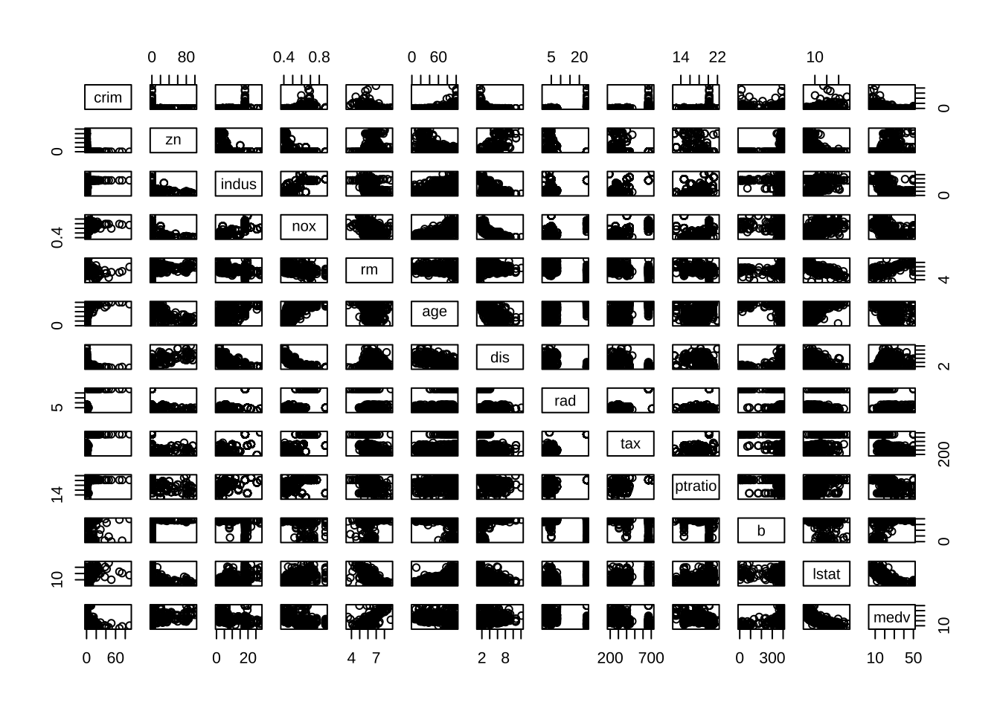
round(cor(housing[, c("crim", "rm", "tax", "lstat")]), 2) # chas(バイナリ)を除去
#> crim rm tax lstat
#> crim 1.00 -0.22 0.58 0.46
#> rm -0.22 1.00 -0.29 -0.61
#> tax 0.58 -0.29 1.00 0.54
#> lstat 0.46 -0.61 0.54 1.00
# install.packages(dplyr)
library(dplyr)
library(corrplot)
corrplot(cor(select(housing, -chas))) # corrplot, dplyr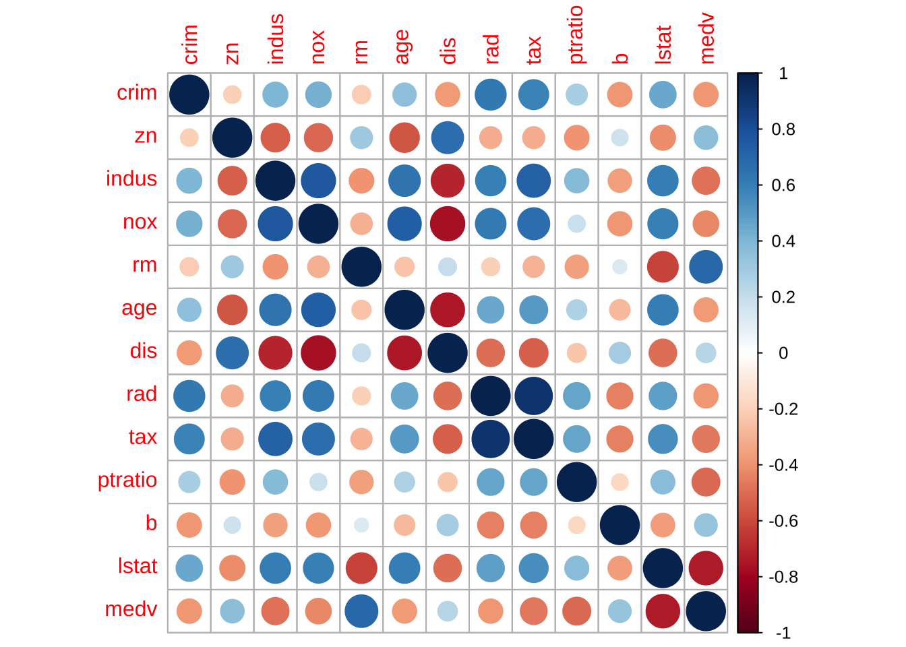
- 4変数に絞り込み
res_lm1 <- lm(medv ~ crim + rm + tax + lstat, data = housing)
summary(res_lm1)
#>
#> Call:
#> lm(formula = medv ~ crim + rm + tax + lstat, data = housing)
#>
#> Residuals:
#> Min 1Q Median 3Q Max
#> -16.383 -3.497 -1.149 1.825 30.716
#>
#> Coefficients:
#> Estimate Std. Error t value Pr(>|t|)
#> (Intercept) -1.414928 3.178364 -0.445 0.6564
#> crim -0.061579 0.035562 -1.732 0.0840 .
#> rm 5.248721 0.439664 11.938 <2e-16 ***
#> tax -0.005018 0.001922 -2.611 0.0093 **
#> lstat -0.534835 0.050258 -10.642 <2e-16 ***
#> ---
#> Signif. codes: 0 '***' 0.001 '**' 0.01 '*' 0.05 '.' 0.1 ' ' 1
#>
#> Residual standard error: 5.458 on 501 degrees of freedom
#> Multiple R-squared: 0.6506, Adjusted R-squared: 0.6478
#> F-statistic: 233.2 on 4 and 501 DF, p-value: < 2.2e-16
anova(res_lm1)
#> Analysis of Variance Table
#>
#> Response: medv
#> Df Sum Sq Mean Sq F value Pr(>F)
#> crim 1 6440.8 6440.8 216.206 < 2.2e-16 ***
#> rm 1 16709.7 16709.7 560.915 < 2.2e-16 ***
#> tax 1 1267.3 1267.3 42.542 1.693e-10 ***
#> lstat 1 3373.6 3373.6 113.247 < 2.2e-16 ***
#> Residuals 501 14924.8 29.8
#> ---
#> Signif. codes: 0 '***' 0.001 '**' 0.01 '*' 0.05 '.' 0.1 ' ' 1
# update関数でモデル更新: 変数ptratio追加
res_lm2 <- update(res_lm1, . ~ . + ptratio)
summary(res_lm2)
#>
#> Call:
#> lm(formula = medv ~ crim + rm + tax + lstat + ptratio, data = housing)
#>
#> Residuals:
#> Min 1Q Median 3Q Max
#> -14.3602 -3.1111 -0.9237 1.6569 30.4116
#>
#> Coefficients:
#> Estimate Std. Error t value Pr(>|t|)
#> (Intercept) 16.7488084 4.0001180 4.187 3.34e-05 ***
#> crim -0.0593795 0.0339830 -1.747 0.0812 .
#> rm 4.6349234 0.4292367 10.798 < 2e-16 ***
#> tax -0.0008196 0.0019328 -0.424 0.6717
#> lstat -0.5280046 0.0480346 -10.992 < 2e-16 ***
#> ptratio -0.8731668 0.1251429 -6.977 9.59e-12 ***
#> ---
#> Signif. codes: 0 '***' 0.001 '**' 0.01 '*' 0.05 '.' 0.1 ' ' 1
#>
#> Residual standard error: 5.215 on 500 degrees of freedom
#> Multiple R-squared: 0.6816, Adjusted R-squared: 0.6784
#> F-statistic: 214.1 on 5 and 500 DF, p-value: < 2.2e-16
anova(res_lm2)
#> Analysis of Variance Table
#>
#> Response: medv
#> Df Sum Sq Mean Sq F value Pr(>F)
#> crim 1 6440.8 6440.8 236.784 < 2.2e-16 ***
#> rm 1 16709.7 16709.7 614.301 < 2.2e-16 ***
#> tax 1 1267.3 1267.3 46.591 2.540e-11 ***
#> lstat 1 3373.6 3373.6 124.026 < 2.2e-16 ***
#> ptratio 1 1324.2 1324.2 48.684 9.589e-12 ***
#> Residuals 500 13600.6 27.2
#> ---
#> Signif. codes: 0 '***' 0.001 '**' 0.01 '*' 0.05 '.' 0.1 ' ' 1
# 変数zn追加
res_lm3 <- update(res_lm2, . ~ . + zn)
summary(res_lm3)
#>
#> Call:
#> lm(formula = medv ~ crim + rm + tax + lstat + ptratio + zn, data = housing)
#>
#> Residuals:
#> Min 1Q Median 3Q Max
#> -14.4790 -3.1374 -0.8754 1.6871 30.3185
#>
#> Coefficients:
#> Estimate Std. Error t value Pr(>|t|)
#> (Intercept) 17.3073953 4.0780517 4.244 2.62e-05 ***
#> crim -0.0584021 0.0340274 -1.716 0.0867 .
#> rm 4.6460026 0.4297290 10.811 < 2e-16 ***
#> tax -0.0008832 0.0019358 -0.456 0.6484
#> lstat -0.5354553 0.0491813 -10.887 < 2e-16 ***
#> ptratio -0.8958719 0.1291910 -6.934 1.27e-11 ***
#> zn -0.0081367 0.0114124 -0.713 0.4762
#> ---
#> Signif. codes: 0 '***' 0.001 '**' 0.01 '*' 0.05 '.' 0.1 ' ' 1
#>
#> Residual standard error: 5.218 on 499 degrees of freedom
#> Multiple R-squared: 0.6819, Adjusted R-squared: 0.6781
#> F-statistic: 178.3 on 6 and 499 DF, p-value: < 2.2e-16
anova(res_lm, res_lm3)
#> Analysis of Variance Table
#>
#> Response: rent
#> Df Sum Sq Mean Sq F value Pr(>F)
#> area 1 3490224482 3490224482 279.906 < 2.2e-16 ***
#> yrs 1 228207060 228207060 18.302 9.440e-05 ***
#> dist 1 642861374 642861374 51.556 4.893e-09 ***
#> Residuals 46 573587084 12469284
#> ---
#> Signif. codes: 0 '***' 0.001 '**' 0.01 '*' 0.05 '.' 0.1 ' ' 1
# 変数nox追加, zn除去
res_lm4 <- update(res_lm3, . ~ . + nox - zn)
summary(res_lm4)
#>
#> Call:
#> lm(formula = medv ~ crim + rm + tax + lstat + ptratio + nox,
#> data = housing)
#>
#> Residuals:
#> Min 1Q Median 3Q Max
#> -14.2389 -3.1372 -0.9454 1.6680 30.4687
#>
#> Coefficients:
#> Estimate Std. Error t value Pr(>|t|)
#> (Intercept) 17.2649269 4.2731659 4.040 6.18e-05 ***
#> crim -0.0596990 0.0340256 -1.755 0.080 .
#> rm 4.6382386 0.4297223 10.794 < 2e-16 ***
#> tax -0.0004089 0.0022705 -0.180 0.857
#> lstat -0.5216846 0.0514382 -10.142 < 2e-16 ***
#> ptratio -0.8844707 0.1294545 -6.832 2.44e-11 ***
#> nox -1.0363053 2.9989281 -0.346 0.730
#> ---
#> Signif. codes: 0 '***' 0.001 '**' 0.01 '*' 0.05 '.' 0.1 ' ' 1
#>
#> Residual standard error: 5.22 on 499 degrees of freedom
#> Multiple R-squared: 0.6817, Adjusted R-squared: 0.6779
#> F-statistic: 178.1 on 6 and 499 DF, p-value: < 2.2e-16
# 変数lstatの逆数を新変数invlstatとして定義し, モデルに追加
data2 <- data.frame(housing, invlstat = 1/housing$lstat)
res_lm5 <- lm(medv ~ crim + rm + tax + ptratio + invlstat, data = data2)
plot(housing$medv, 1/housing$lstat)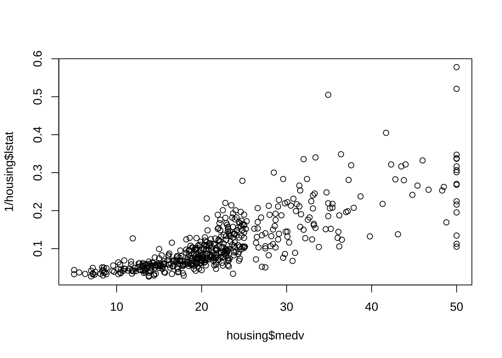
summary(res_lm5)
#>
#> Call:
#> lm(formula = medv ~ crim + rm + tax + ptratio + invlstat, data = data2)
#>
#> Residuals:
#> Min 1Q Median 3Q Max
#> -14.9062 -2.6032 -0.5276 2.1041 31.2592
#>
#> Coefficients:
#> Estimate Std. Error t value Pr(>|t|)
#> (Intercept) 6.665018 3.295520 2.022 0.0437 *
#> crim -0.119564 0.030121 -3.969 8.26e-05 ***
#> rm 3.609393 0.394880 9.140 < 2e-16 ***
#> tax -0.002272 0.001693 -1.342 0.1802
#> ptratio -0.665188 0.114156 -5.827 1.01e-08 ***
#> invlstat 60.465938 3.762069 16.073 < 2e-16 ***
#> ---
#> Signif. codes: 0 '***' 0.001 '**' 0.01 '*' 0.05 '.' 0.1 ' ' 1
#>
#> Residual standard error: 4.719 on 500 degrees of freedom
#> Multiple R-squared: 0.7393, Adjusted R-squared: 0.7367
#> F-statistic: 283.6 on 5 and 500 DF, p-value: < 2.2e-16
# AIC, BICの計算
AIC(res_lm5, res_lm2)
#> df AIC
#> res_lm5 7 3014.149
#> res_lm2 7 3115.379
BIC(res_lm5, res_lm2)
#> df BIC
#> res_lm5 7 3043.735
#> res_lm2 7 3144.965
# 追加 (除去) した変数群の有意性 (例)
anova(res_lm1, res_lm3, test = "F") # F検定
#> Analysis of Variance Table
#>
#> Model 1: medv ~ crim + rm + tax + lstat
#> Model 2: medv ~ crim + rm + tax + lstat + ptratio + zn
#> Res.Df RSS Df Sum of Sq F Pr(>F)
#> 1 501 14925
#> 2 499 13587 2 1338.1 24.572 6.636e-11 ***
#> ---
#> Signif. codes: 0 '***' 0.001 '**' 0.01 '*' 0.05 '.' 0.1 ' ' 1
anova(res_lm3, res_lm1, test = "F") # 実質的に同一
#> Analysis of Variance Table
#>
#> Model 1: medv ~ crim + rm + tax + lstat + ptratio + zn
#> Model 2: medv ~ crim + rm + tax + lstat
#> Res.Df RSS Df Sum of Sq F Pr(>F)
#> 1 499 13587
#> 2 501 14925 -2 -1338.1 24.572 6.636e-11 ***
#> ---
#> Signif. codes: 0 '***' 0.001 '**' 0.01 '*' 0.05 '.' 0.1 ' ' 1
# anova(res_lm1, res_lm2, test = 'LRT') # 尤度比検定- ステップワイズ法による変数選択
# step(); AICによって決定
# scope: モデルサーチの範囲(追加や削除を検討するべき変数を指定)
# scope指定ない場合:
# - directionのデフォルトは, 変数減少法(後方削除)
# - モデルサーチ上限(upper)は, 初期モデル
# scope指定ある場合:
# - directionのデフォルトは, 変数増減法
# - scopeがリストでなく, 単一式で与えらている場合, upperモデルと解釈 (lowerは欠損)res_lm_all <- lm(medv ~ ., data = housing) # → 13変数
res_lm_all_2 <- lm(medv ~ 1, data = housing) # → y切片のみ (変数なし)
step(res_lm5) # 変数減少法 (scopeない場合のデフォルト)
#> Start: AIC=1576.18
#> medv ~ crim + rm + tax + ptratio + invlstat
#>
#> Df Sum of Sq RSS AIC
#> - tax 1 40.1 11175 1576.0
#> <none> 11134 1576.2
#> - crim 1 350.9 11485 1589.9
#> - ptratio 1 756.1 11891 1607.4
#> - rm 1 1860.5 12995 1652.4
#> - invlstat 1 5752.7 16887 1784.9
#>
#> Step: AIC=1576
#> medv ~ crim + rm + ptratio + invlstat
#>
#> Df Sum of Sq RSS AIC
#> <none> 11175 1576.0
#> - crim 1 643.8 11818 1602.3
#> - ptratio 1 951.0 12126 1615.3
#> - rm 1 1847.9 13023 1651.4
#> - invlstat 1 6153.6 17328 1796.0
#>
#> Call:
#> lm(formula = medv ~ crim + rm + ptratio + invlstat, data = data2)
#>
#> Coefficients:
#> (Intercept) crim rm ptratio invlstat
#> 6.6395 -0.1399 3.5960 -0.7113 61.4172
# step(res_lm5, direction = 'forward')\t# 変数増加法 (上限は初期モデル)
# step(res_lm5, direction = 'both')\t# 変数増減法 (上限は初期モデル)# 採用する変数の上限・下限の指定
step(res_lm_all, scope = list(lower = ~crim + rm)) # 下限のモデルを指定. 変数増減法
#> Start: AIC=1589.64
#> medv ~ crim + zn + indus + chas + nox + rm + age + dis + rad +
#> tax + ptratio + b + lstat
#>
#> Df Sum of Sq RSS AIC
#> - age 1 0.06 11079 1587.7
#> - indus 1 2.52 11081 1587.8
#> <none> 11079 1589.6
#> - chas 1 218.97 11298 1597.5
#> - tax 1 242.26 11321 1598.6
#> - zn 1 257.49 11336 1599.3
#> - b 1 270.63 11349 1599.8
#> - rad 1 479.15 11558 1609.1
#> - nox 1 487.16 11566 1609.4
#> - ptratio 1 1194.23 12273 1639.4
#> - dis 1 1232.41 12311 1641.0
#> - lstat 1 2410.84 13490 1687.3
#>
#> Step: AIC=1587.65
#> medv ~ crim + zn + indus + chas + nox + rm + dis + rad + tax +
#> ptratio + b + lstat
#>
#> Df Sum of Sq RSS AIC
#> - indus 1 2.52 11081 1585.8
#> <none> 11079 1587.7
#> - chas 1 219.91 11299 1595.6
#> - tax 1 242.24 11321 1596.6
#> - zn 1 260.32 11339 1597.4
#> - b 1 272.26 11351 1597.9
#> - rad 1 481.09 11560 1607.2
#> - nox 1 520.87 11600 1608.9
#> - ptratio 1 1200.23 12279 1637.7
#> - dis 1 1352.26 12431 1643.9
#> - lstat 1 2718.88 13798 1696.7
#>
#> Step: AIC=1585.76
#> medv ~ crim + zn + chas + nox + rm + dis + rad + tax + ptratio +
#> b + lstat
#>
#> Df Sum of Sq RSS AIC
#> <none> 11081 1585.8
#> - chas 1 227.21 11309 1594.0
#> - zn 1 257.82 11339 1595.4
#> - b 1 270.82 11352 1596.0
#> - tax 1 273.62 11355 1596.1
#> - rad 1 500.92 11582 1606.1
#> - nox 1 541.91 11623 1607.9
#> - ptratio 1 1206.45 12288 1636.0
#> - dis 1 1448.94 12530 1645.9
#> - lstat 1 2723.48 13805 1695.0
#>
#> Call:
#> lm(formula = medv ~ crim + zn + chas + nox + rm + dis + rad +
#> tax + ptratio + b + lstat, data = housing)
#>
#> Coefficients:
#> (Intercept) crim zn chas nox rm
#> 36.341145 -0.108413 0.045845 2.718716 -17.376023 3.801579
#> dis rad tax ptratio b lstat
#> -1.492711 0.299608 -0.011778 -0.946525 0.009291 -0.522553
step(res_lm_all_2, scope = list(upper = ~crim + rm)) # 上限のモデルを指定. 変数増減法
#> Start: AIC=2246.51
#> medv ~ 1
#>
#> Df Sum of Sq RSS AIC
#> + rm 1 20654.4 22062 1914.2
#> + crim 1 6440.8 36276 2165.8
#> <none> 42716 2246.5
#>
#> Step: AIC=1914.19
#> medv ~ rm
#>
#> Df Sum of Sq RSS AIC
#> + crim 1 2496.1 19566 1855.4
#> <none> 22062 1914.2
#> - rm 1 20654.4 42716 2246.5
#>
#> Step: AIC=1855.43
#> medv ~ rm + crim
#>
#> Df Sum of Sq RSS AIC
#> <none> 19566 1855.4
#> - crim 1 2496.1 22062 1914.2
#> - rm 1 16709.7 36276 2165.8
#>
#> Call:
#> lm(formula = medv ~ rm + crim, data = housing)
#>
#> Coefficients:
#> (Intercept) rm crim
#> -29.2447 8.3911 -0.2649
step(res_lm1, scope = list(upper = ~crim + rm + tax + lstat + ptratio + b, lower = ~crim +
rm))
#> Start: AIC=1722.43
#> medv ~ crim + rm + tax + lstat
#>
#> Df Sum of Sq RSS AIC
#> + ptratio 1 1324.2 13601 1677.4
#> + b 1 255.6 14669 1715.7
#> <none> 14925 1722.4
#> - tax 1 203.1 15128 1727.3
#> - lstat 1 3373.6 18298 1823.5
#>
#> Step: AIC=1677.41
#> medv ~ crim + rm + tax + lstat + ptratio
#>
#> Df Sum of Sq RSS AIC
#> + b 1 306.0 13295 1667.9
#> - tax 1 4.9 13606 1675.6
#> <none> 13601 1677.4
#> - ptratio 1 1324.2 14925 1722.4
#> - lstat 1 3286.7 16887 1784.9
#>
#> Step: AIC=1667.9
#> medv ~ crim + rm + tax + lstat + ptratio + b
#>
#> Df Sum of Sq RSS AIC
#> - tax 1 3.06 13298 1666.0
#> <none> 13295 1667.9
#> - b 1 306.02 13601 1677.4
#> - ptratio 1 1374.66 14669 1715.7
#> - lstat 1 2849.76 16144 1764.2
#>
#> Step: AIC=1666.01
#> medv ~ crim + rm + lstat + ptratio + b
#>
#> Df Sum of Sq RSS AIC
#> <none> 13298 1666.0
#> + tax 1 3.06 13295 1667.9
#> - b 1 307.85 13606 1675.6
#> - ptratio 1 1478.71 14776 1717.4
#> - lstat 1 3001.77 16299 1767.0
#>
#> Call:
#> lm(formula = medv ~ crim + rm + lstat + ptratio + b, data = housing)
#>
#> Coefficients:
#> (Intercept) crim rm lstat ptratio b
#> 11.615006 -0.038921 4.788176 -0.495139 -0.877249 0.009593
# 上限・下限を同時に指定. 変数増減法 ----------------------------------------#5.3 説明変数に質的変数を含む回帰
データセット#3: 高速道路事故データ
- Hoffstedt’s Highway accident data
- adt：1日の平均交通量（単位：千台)
- trks：総交通量に占めるトラック交通量の割合
- lane：交通の総車線数
- acpt：1マイルあたりのアクセスポイント数
- sigs: 1マイルあたりの信号付きインターチェンジの数
- itg：1マイルあたりの高速道路型インターチェンジの数
- slim：1973年の制限速度
- lwid: 車線幅（フィート単位）
- shld: 車道の外側路肩の幅（フィート単位)
- htype: 道路の種類または道路の財源を示す指標:
"mc": メジャーコレクター (major collector), "fai": 州間 (interstate) 高速道路, "pa": 地域・都市間主要幹線 (principal arterial) 道路, "ma"; 地域・都市内主要幹線 (major arterial) 道路
- rate: 1973年の事故発生率（百万車両マイル当たり）
- 注) htypeは4-水準因子
- 参考文献: Weisberg (2014), Applied Linear Regression, 4th Ed., Wiley.library(alr4)
data(Highway)
str(Highway)
#> 'data.frame': 39 obs. of 12 variables:
#> $ adt : int 69 73 49 61 28 30 46 25 43 23 ...
#> $ trks : int 8 8 10 13 12 6 8 9 12 7 ...
#> $ lane : int 8 4 4 6 4 4 4 4 4 4 ...
#> $ acpt : num 4.6 4.4 4.7 3.8 2.2 24.8 11 18.5 7.5 8.2 ...
#> $ sigs : num 0 0 0 0 0 1.84 0.7 0.38 1.39 1.21 ...
#> $ itg : num 1.2 1.43 1.54 0.94 0.65 0.34 0.47 0.38 0.95 0.12 ...
#> $ slim : int 55 60 60 65 70 55 55 55 50 50 ...
#> $ len : num 4.99 16.11 9.75 10.65 20.01 ...
#> $ lwid : int 12 12 12 12 12 12 12 12 12 12 ...
#> $ shld : int 10 10 10 10 10 10 8 10 4 5 ...
#> $ htype: Factor w/ 4 levels "mc","fai","pa",..: 2 2 2 2 2 3 3 3 3 3 ...
#> $ rate : num 4.58 2.86 3.02 2.29 1.61 6.87 3.85 6.12 3.29 5.88 ...library(corrplot)
cor_hw <- cor(cbind(Highway$rate, Highway[, -(11:12)])) # htypeを除去
corrplot.mixed(cor_hw)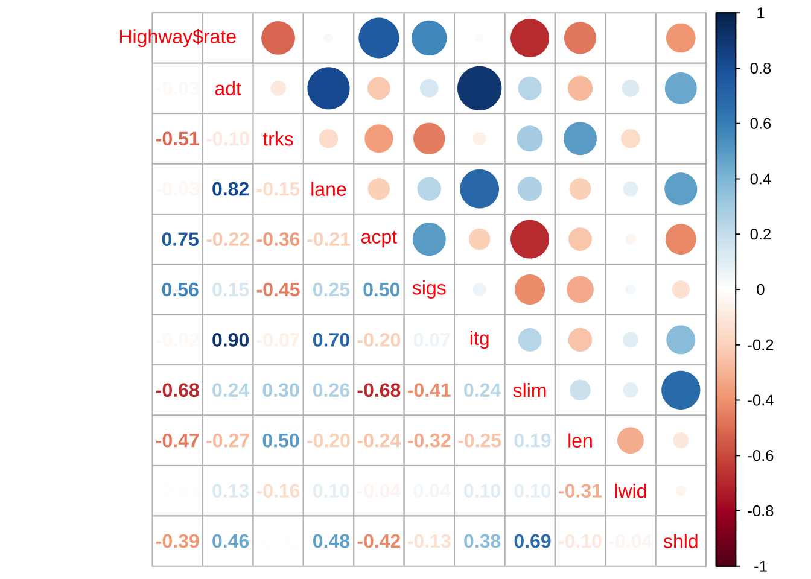
- 多重共線性のチェック (VIF)
# VIF install.packages('car')\t\t# or RStudio, Tools → Install packages,
library(car) # 'Companion to Applied Regression' package
vif(res_lm)
#> area yrs dist
#> 1.003378 1.006251 1.003784# OLS回帰
res_lm <- lm(rate ~ ., data = Highway)
summary(res_lm)
#>
#> Call:
#> lm(formula = rate ~ ., data = Highway)
#>
#> Residuals:
#> Min 1Q Median 3Q Max
#> -1.99564 -0.62039 -0.05676 0.61741 2.54998
#>
#> Coefficients:
#> Estimate Std. Error t value Pr(>|t|)
#> (Intercept) 13.658212 6.872719 1.987 0.0579 .
#> adt -0.004038 0.033945 -0.119 0.9063
#> trks -0.100150 0.114726 -0.873 0.3910
#> lane 0.026675 0.283834 0.094 0.9259
#> acpt 0.066588 0.042569 1.564 0.1303
#> sigs 0.713644 0.525213 1.359 0.1864
#> itg -0.475478 1.282742 -0.371 0.7140
#> slim -0.123778 0.081683 -1.515 0.1422
#> len -0.064751 0.033369 -1.940 0.0637 .
#> lwid -0.133813 0.597917 -0.224 0.8247
#> shld 0.014113 0.162174 0.087 0.9313
#> htypefai 0.543592 1.728270 0.315 0.7557
#> htypepa -1.009777 1.105612 -0.913 0.3698
#> htypema -0.548025 0.975623 -0.562 0.5793
#> ---
#> Signif. codes: 0 '***' 0.001 '**' 0.01 '*' 0.05 '.' 0.1 ' ' 1
#>
#> Residual standard error: 1.198 on 25 degrees of freedom
#> Multiple R-squared: 0.7605, Adjusted R-squared: 0.636
#> F-statistic: 6.107 on 13 and 25 DF, p-value: 5.733e-05
# ステップワイズ回帰
res_step <- step(res_lm)
#> Start: AIC=24.76
#> rate ~ adt + trks + lane + acpt + sigs + itg + slim + len + lwid +
#> shld + htype
#>
#> Df Sum of Sq RSS AIC
#> - htype 3 3.1001 38.994 21.994
#> - shld 1 0.0109 35.905 22.775
#> - lane 1 0.0127 35.906 22.777
#> - adt 1 0.0203 35.914 22.785
#> - lwid 1 0.0719 35.966 22.841
#> - itg 1 0.1973 36.091 22.977
#> - trks 1 1.0941 36.988 23.934
#> <none> 35.894 24.763
#> - sigs 1 2.6508 38.544 25.542
#> - slim 1 3.2969 39.191 26.190
#> - acpt 1 3.5130 39.407 26.405
#> - len 1 5.4061 41.300 28.235
#>
#> Step: AIC=21.99
#> rate ~ adt + trks + lane + acpt + sigs + itg + slim + len + lwid +
#> shld
#>
#> Df Sum of Sq RSS AIC
#> - adt 1 0.0131 39.007 20.007
#> - lane 1 0.0296 39.023 20.023
#> - itg 1 0.0431 39.037 20.037
#> - lwid 1 0.9119 39.906 20.895
#> - sigs 1 0.9652 39.959 20.948
#> - shld 1 0.9680 39.962 20.950
#> - slim 1 1.3365 40.330 21.308
#> - trks 1 1.7899 40.784 21.744
#> <none> 38.994 21.994
#> - len 1 5.2726 44.266 24.940
#> - acpt 1 11.8141 50.808 30.315
#>
#> Step: AIC=20.01
#> rate ~ trks + lane + acpt + sigs + itg + slim + len + lwid +
#> shld
#>
#> Df Sum of Sq RSS AIC
#> - lane 1 0.0780 39.085 18.085
#> - itg 1 0.2582 39.265 18.264
#> - lwid 1 0.8988 39.906 18.895
#> - shld 1 0.9652 39.972 18.960
#> - sigs 1 0.9786 39.986 18.973
#> - slim 1 1.4501 40.457 19.430
#> - trks 1 1.7771 40.784 19.744
#> <none> 39.007 20.007
#> - len 1 5.3262 44.333 22.999
#> - acpt 1 11.9079 50.915 28.397
#>
#> Step: AIC=18.08
#> rate ~ trks + acpt + sigs + itg + slim + len + lwid + shld
#>
#> Df Sum of Sq RSS AIC
#> - itg 1 0.7717 39.857 16.847
#> - lwid 1 0.8615 39.946 16.935
#> - shld 1 0.8874 39.972 16.960
#> - sigs 1 1.3821 40.467 17.440
#> - slim 1 1.5009 40.586 17.554
#> - trks 1 1.8331 40.918 17.872
#> <none> 39.085 18.085
#> - len 1 5.2498 44.335 21.000
#> - acpt 1 11.9551 51.040 26.493
#>
#> Step: AIC=16.85
#> rate ~ trks + acpt + sigs + slim + len + lwid + shld
#>
#> Df Sum of Sq RSS AIC
#> - shld 1 0.5989 40.456 15.429
#> - lwid 1 0.7972 40.654 15.620
#> - slim 1 1.5121 41.369 16.300
#> - sigs 1 1.7001 41.557 16.476
#> - trks 1 1.7312 41.588 16.506
#> <none> 39.857 16.847
#> - len 1 6.3017 46.158 20.572
#> - acpt 1 11.3358 51.192 24.609
#>
#> Step: AIC=15.43
#> rate ~ trks + acpt + sigs + slim + len + lwid
#>
#> Df Sum of Sq RSS AIC
#> - lwid 1 0.4727 40.928 13.882
#> - trks 1 1.4809 41.936 14.831
#> - sigs 1 1.4984 41.954 14.847
#> <none> 40.456 15.429
#> - slim 1 5.6245 46.080 18.506
#> - len 1 5.7031 46.159 18.572
#> - acpt 1 11.5064 51.962 23.191
#>
#> Step: AIC=13.88
#> rate ~ trks + acpt + sigs + slim + len
#>
#> Df Sum of Sq RSS AIC
#> - trks 1 1.4051 42.333 13.198
#> - sigs 1 1.5118 42.440 13.297
#> <none> 40.928 13.882
#> - len 1 5.2305 46.159 16.573
#> - slim 1 6.0861 47.014 17.289
#> - acpt 1 11.6253 52.554 21.633
#>
#> Step: AIC=13.2
#> rate ~ acpt + sigs + slim + len
#>
#> Df Sum of Sq RSS AIC
#> <none> 42.333 13.198
#> - sigs 1 2.5132 44.847 13.448
#> - slim 1 6.3349 48.668 16.637
#> - len 1 9.1881 51.521 18.859
#> - acpt 1 12.5355 54.869 21.314
summary(res_step)
#>
#> Call:
#> lm(formula = rate ~ acpt + sigs + slim + len, data = Highway)
#>
#> Residuals:
#> Min 1Q Median 3Q Max
#> -1.7505 -0.8659 0.1051 0.6618 2.5116
#>
#> Coefficients:
#> Estimate Std. Error t value Pr(>|t|)
#> (Intercept) 8.81443 2.60435 3.385 0.00181 **
#> acpt 0.08940 0.02818 3.173 0.00319 **
#> sigs 0.48538 0.34164 1.421 0.16450
#> slim -0.09599 0.04255 -2.256 0.03064 *
#> len -0.06856 0.02524 -2.717 0.01030 *
#> ---
#> Signif. codes: 0 '***' 0.001 '**' 0.01 '*' 0.05 '.' 0.1 ' ' 1
#>
#> Residual standard error: 1.116 on 34 degrees of freedom
#> Multiple R-squared: 0.7176, Adjusted R-squared: 0.6843
#> F-statistic: 21.6 on 4 and 34 DF, p-value: 6.112e-09
## 除かれた変数群の有意性 anova(res_step, res_lm) # anova(res_lm, res_step)5.4 時系列データ同士の回帰
データセット#4: 株式市場
- TOPIX: 東証株価指数, 月次終値, 2011年12月--2017年4月
- X1--X4, ある指標topixmat <- read.csv("topix_X.csv")
attach(topixmat)
res_lm1 <- lm(topix ~ X1)
summary(res_lm1)
#>
#> Call:
#> lm(formula = topix ~ X1)
#>
#> Residuals:
#> Min 1Q Median 3Q Max
#> -391.79 -173.11 -16.77 82.05 452.93
#>
#> Coefficients:
#> Estimate Std. Error t value Pr(>|t|)
#> (Intercept) -170.600 219.329 -0.778 0.44
#> X1 11.635 1.805 6.448 1.82e-08 ***
#> ---
#> Signif. codes: 0 '***' 0.001 '**' 0.01 '*' 0.05 '.' 0.1 ' ' 1
#>
#> Residual standard error: 220.2 on 63 degrees of freedom
#> Multiple R-squared: 0.3975, Adjusted R-squared: 0.388
#> F-statistic: 41.57 on 1 and 63 DF, p-value: 1.815e-08
par(mfrow = c(1, 1))
plot(X1, topix)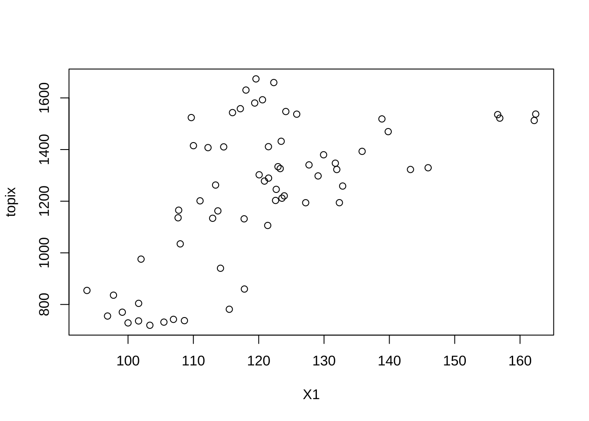
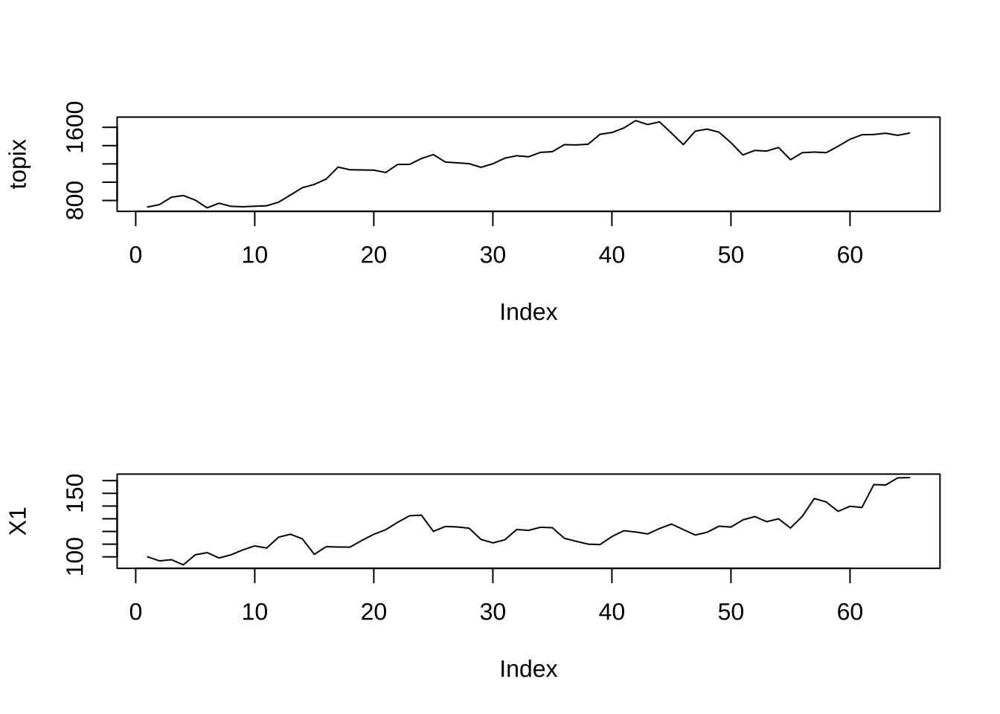
res_lm2 <- lm(topix ~ X2)
summary(res_lm2)
#>
#> Call:
#> lm(formula = topix ~ X2)
#>
#> Residuals:
#> Min 1Q Median 3Q Max
#> -396.10 -182.85 -57.86 198.61 599.41
#>
#> Coefficients:
#> Estimate Std. Error t value Pr(>|t|)
#> (Intercept) 153.656 243.855 0.63 0.531
#> X2 8.739 1.960 4.46 3.45e-05 ***
#> ---
#> Signif. codes: 0 '***' 0.001 '**' 0.01 '*' 0.05 '.' 0.1 ' ' 1
#>
#> Residual standard error: 247.3 on 63 degrees of freedom
#> Multiple R-squared: 0.2399, Adjusted R-squared: 0.2279
#> F-statistic: 19.89 on 1 and 63 DF, p-value: 3.451e-05
plot(X2, topix)
cor(X2, topix)
#> [1] 0.4898424
par(mfrow = c(2, 1))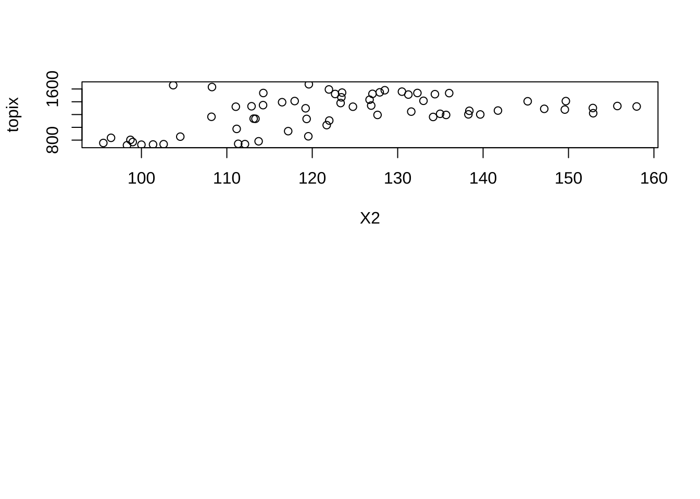
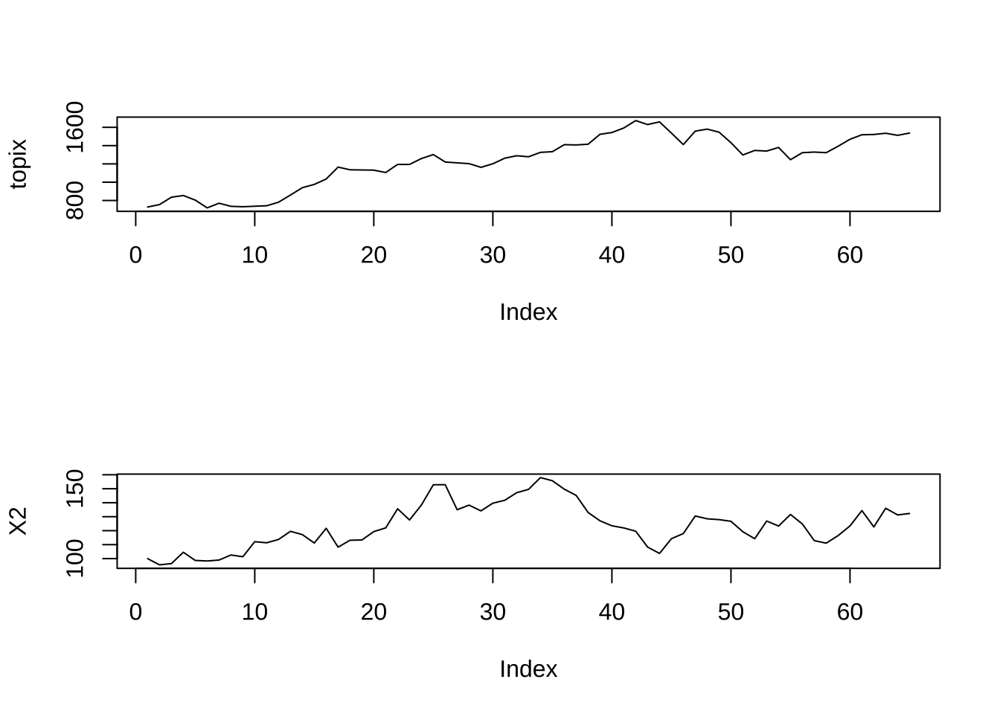
# 残差プロット plot(res_lm1); plot(res_lm2)
# Durbin - Watson検定
library(lmtest)
dwtest(res_lm1)
#>
#> Durbin-Watson test
#>
#> data: res_lm1
#> DW = 0.17012, p-value < 2.2e-16
#> alternative hypothesis: true autocorrelation is greater than 0
dwtest(res_lm2)
#>
#> Durbin-Watson test
#>
#> data: res_lm2
#> DW = 0.1226, p-value < 2.2e-16
#> alternative hypothesis: true autocorrelation is greater than 05.5 線形モデル
本セクションでは, 線形モデルと関数lmの出力結果との対応関係の確認を行う.
具体的には, 目的変数が量的変数で, いずれもカテゴリー変数である2つの説明変数を持つ線形モデル (2因子モデル) を取り上げる.
サプリメント売上データに対して”回帰分析” (関数lm()を適用) することで得られる
回帰係数の推定値を調べることで, 線形モデルの持つパラメータの意味を理解する.
さらに, Rの環境設定のための関数options()のパラメータの一つであるコントラスト(“contrasts”)を変えることで, パラメータの持つ意味が, すなわち, 解釈が変わることも確認する.
2因子モデルの例 (交互作用なし)
データ: サプリメント売上データ (1) (仮想)
- sales1_10.txt, sales2_10.txt (過去10分売上)
- 性別 (因子A)
- 年代 (因子B)
- 売上 (万円)# 因子A (性別) 因子B (30代以下, 40代以上) サプリメント売上(万円)
# 過去n週間データ (n = 10, 50)
### n = 10のケース
sales <- read.csv("sales1_10.txt")
# sales <- read.csv('sales2_10.txt')
sales
#> 性別 年代 売上
#> 1 A1 B1 14.06
#> 2 A1 B1 13.45
#> 3 A1 B1 9.89
#> 4 A1 B1 12.20
#> 5 A1 B1 14.88
#> 6 A1 B1 15.17
#> 7 A1 B1 10.38
#> 8 A1 B1 12.91
#> 9 A1 B1 9.12
#> 10 A1 B1 13.23
#> 11 A1 B2 21.31
#> 12 A1 B2 20.27
#> 13 A1 B2 17.29
#> 14 A1 B2 20.96
#> 15 A1 B2 20.22
#> 16 A1 B2 18.27
#> 17 A1 B2 15.14
#> 18 A1 B2 17.41
#> 19 A1 B2 20.78
#> 20 A1 B2 19.45
#> 21 A2 B1 22.21
#> 22 A2 B1 17.44
#> 23 A2 B1 21.98
#> 24 A2 B1 17.64
#> 25 A2 B1 20.20
#> 26 A2 B1 22.88
#> 27 A2 B1 21.94
#> 28 A2 B1 21.38
#> 29 A2 B1 23.69
#> 30 A2 B1 23.24
#> 31 A2 B2 22.44
#> 32 A2 B2 27.77
#> 33 A2 B2 30.91
#> 34 A2 B2 28.55
#> 35 A2 B2 23.86
#> 36 A2 B2 23.69
#> 37 A2 B2 29.09
#> 38 A2 B2 22.72
#> 39 A2 B2 27.03
#> 40 A2 B2 26.05# クロス集計
table(sales[, -3])
#> 年代
#> 性別 B1 B2
#> A1 10 10
#> A2 10 10
# 各グループの平均売上計算
aggregate(売上 ~ 性別 + 年代, data = sales, FUN = mean) # 性別・年代別平均
#> 性別 年代 売上
#> 1 A1 B1 12.529
#> 2 A2 B1 21.260
#> 3 A1 B2 19.110
#> 4 A2 B2 26.211- 主効果モデル (交互作用なし)
# lm関数の実行
res_lm1 <- lm(売上 ~ 性別 + 年代, data = sales)
summary(res_lm1)
#>
#> Call:
#> lm(formula = 売上 ~ 性別 + 年代, data = sales)
#>
#> Residuals:
#> Min 1Q Median 3Q Max
#> -4.1785 -1.6985 0.5205 1.9345 4.2915
#>
#> Coefficients:
#> Estimate Std. Error t value Pr(>|t|)
#> (Intercept) 12.9365 0.6417 20.161 < 2e-16 ***
#> 性別A2 7.9160 0.7409 10.684 7.33e-13 ***
#> 年代B2 5.7660 0.7409 7.782 2.64e-09 ***
#> ---
#> Signif. codes: 0 '***' 0.001 '**' 0.01 '*' 0.05 '.' 0.1 ' ' 1
#>
#> Residual standard error: 2.343 on 37 degrees of freedom
#> Multiple R-squared: 0.8252, Adjusted R-squared: 0.8158
#> F-statistic: 87.35 on 2 and 37 DF, p-value: 9.677e-152因子モデルの例 (交互作用有り)
- 飽和モデル (主効果 + 交互作用効果)
res_lm2 <- lm(売上 ~ 性別 * 年代, data = sales)
summary(res_lm2)
#>
#> Call:
#> lm(formula = 売上 ~ 性別 * 年代, data = sales)
#>
#> Residuals:
#> Min 1Q Median 3Q Max
#> -3.9700 -1.9023 0.6905 1.6325 4.6990
#>
#> Coefficients:
#> Estimate Std. Error t value Pr(>|t|)
#> (Intercept) 12.5290 0.7388 16.959 < 2e-16 ***
#> 性別A2 8.7310 1.0448 8.357 5.96e-10 ***
#> 年代B2 6.5810 1.0448 6.299 2.78e-07 ***
#> 性別A2:年代B2 -1.6300 1.4775 -1.103 0.277
#> ---
#> Signif. codes: 0 '***' 0.001 '**' 0.01 '*' 0.05 '.' 0.1 ' ' 1
#>
#> Residual standard error: 2.336 on 36 degrees of freedom
#> Multiple R-squared: 0.8309, Adjusted R-squared: 0.8169
#> F-statistic: 58.98 on 3 and 36 DF, p-value: 5.697e-14
anova(res_lm2)
#> Analysis of Variance Table
#>
#> Response: 売上
#> Df Sum Sq Mean Sq F value Pr(>F)
#> 性別 1 626.63 626.63 114.813 9.506e-13 ***
#> 年代 1 332.47 332.47 60.916 2.975e-09 ***
#> 性別:年代 1 6.64 6.64 1.217 0.2773
#> Residuals 36 196.48 5.46
#> ---
#> Signif. codes: 0 '***' 0.001 '**' 0.01 '*' 0.05 '.' 0.1 ' ' 1
# 交互作用プロット
attach(sales)
interaction.plot(年代, 性別, response = 売上)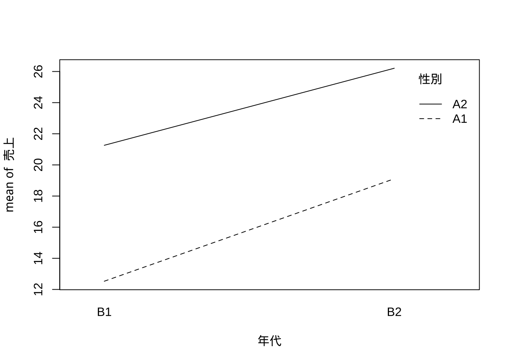
データ: サプリメント売上データ (2) (仮想)
上と同じデータ項目を持つが, 件数が\(n=10 \rightarrow 50\)に増加したデータセット.
- sales1_50.txt, sales2_50.txt (過去50分売上)
- 性別 (因子A)
- 年代 (因子B)
- 売上 (万円)### n = 50のケース
sales2 <- read.csv("sales1_50.txt")
# sales2 <- read.csv('sales2_50.txt')
# クロス集計
table(sales2[, -3])
#> 年代
#> 性別 B1 B2
#> A1 50 50
#> A2 50 50
# 各グループの平均売上計算
aggregate(売上 ~ 性別 + 年代, data = sales2, FUN = mean) # 性別・年代別平均
#> 性別 年代 売上
#> 1 A1 B1 12.9766
#> 2 A2 B1 24.0718
#> 3 A1 B2 18.2048
#> 4 A2 B2 27.3582- 主効果モデル (交互作用なし)
# 主効果モデル
res_lm1 <- lm(売上 ~ 性別 + 年代, data = sales2)
summary(res_lm1)
#>
#> Call:
#> lm(formula = 売上 ~ 性別 + 年代, data = sales2)
#>
#> Residuals:
#> Min 1Q Median 3Q Max
#> -6.8037 -2.2375 0.0243 2.2664 6.9406
#>
#> Coefficients:
#> Estimate Std. Error t value Pr(>|t|)
#> (Intercept) 13.4621 0.3516 38.29 <2e-16 ***
#> 性別A2 10.1243 0.4060 24.94 <2e-16 ***
#> 年代B2 4.2573 0.4060 10.49 <2e-16 ***
#> ---
#> Signif. codes: 0 '***' 0.001 '**' 0.01 '*' 0.05 '.' 0.1 ' ' 1
#>
#> Residual standard error: 2.871 on 197 degrees of freedom
#> Multiple R-squared: 0.7879, Adjusted R-squared: 0.7858
#> F-statistic: 365.9 on 2 and 197 DF, p-value: < 2.2e-16- 飽和モデル (主効果 + 交互作用効果)
# 飽和モデル (主効果+交互作用効果)
res_lm2 <- lm(売上 ~ 性別 * 年代, data = sales2)
summary(res_lm2)
#>
#> Call:
#> lm(formula = 売上 ~ 性別 * 年代, data = sales2)
#>
#> Residuals:
#> Min 1Q Median 3Q Max
#> -6.3182 -2.0093 0.2117 2.1238 6.8418
#>
#> Coefficients:
#> Estimate Std. Error t value Pr(>|t|)
#> (Intercept) 12.9766 0.4011 32.355 <2e-16 ***
#> 性別A2 11.0952 0.5672 19.561 <2e-16 ***
#> 年代B2 5.2282 0.5672 9.217 <2e-16 ***
#> 性別A2:年代B2 -1.9418 0.8021 -2.421 0.0164 *
#> ---
#> Signif. codes: 0 '***' 0.001 '**' 0.01 '*' 0.05 '.' 0.1 ' ' 1
#>
#> Residual standard error: 2.836 on 196 degrees of freedom
#> Multiple R-squared: 0.7941, Adjusted R-squared: 0.7909
#> F-statistic: 251.9 on 3 and 196 DF, p-value: < 2.2e-16
anova(res_lm2)
#> Analysis of Variance Table
#>
#> Response: 売上
#> Df Sum Sq Mean Sq F value Pr(>F)
#> 性別 1 5125.1 5125.1 637.21 <2e-16 ***
#> 年代 1 906.2 906.2 112.67 <2e-16 ***
#> 性別:年代 1 47.1 47.1 5.86 0.0164 *
#> Residuals 196 1576.4 8.0
#> ---
#> Signif. codes: 0 '***' 0.001 '**' 0.01 '*' 0.05 '.' 0.1 ' ' 1
anova(res_lm1, res_lm2, test = "F")
#> Analysis of Variance Table
#>
#> Model 1: 売上 ~ 性別 + 年代
#> Model 2: 売上 ~ 性別 * 年代
#> Res.Df RSS Df Sum of Sq F Pr(>F)
#> 1 197 1623.6
#> 2 196 1576.4 1 47.132 5.86 0.0164 *
#> ---
#> Signif. codes: 0 '***' 0.001 '**' 0.01 '*' 0.05 '.' 0.1 ' ' 1
# 交互作用プロット
interaction.plot(年代, 性別, response = 売上)- 予測 (理論値)
sales_pred1 <- data.frame(sales2, predict(res_lm1))
head(sales_pred1, 10)
#> 性別 年代 売上 predict.res_lm1.
#> 1 A1 B1 14.06 13.46205
#> 2 A1 B1 13.45 13.46205
#> 3 A1 B1 9.89 13.46205
#> 4 A1 B1 12.20 13.46205
#> 5 A1 B1 14.88 13.46205
#> 6 A1 B1 15.17 13.46205
#> 7 A1 B1 10.38 13.46205
#> 8 A1 B1 12.91 13.46205
#> 9 A1 B1 9.12 13.46205
#> 10 A1 B1 13.23 13.46205sales_pred2 <- data.frame(sales2, predict(res_lm2))
head(sales_pred2, 10)
#> 性別 年代 売上 predict.res_lm2.
#> 1 A1 B1 14.06 12.9766
#> 2 A1 B1 13.45 12.9766
#> 3 A1 B1 9.89 12.9766
#> 4 A1 B1 12.20 12.9766
#> 5 A1 B1 14.88 12.9766
#> 6 A1 B1 15.17 12.9766
#> 7 A1 B1 10.38 12.9766
#> 8 A1 B1 12.91 12.9766
#> 9 A1 B1 9.12 12.9766
#> 10 A1 B1 13.23 12.9766“コントラスト”の設定変更
関数options()のパラメータの一つであるコントラスト(“contrasts”)を変えることで, パラメータの持つ意味が, すなわち, 解釈が変わる.
Rのデフォルトは, 処置対比 (“contr.treatment”).
#options("contrasts")
#options("contrasts" = c("contr.treatment", "contr.poly")) # デフォルト
#options("contrasts" = c("contr.sum", "contr.poly"))零和対比 (“contr.sum) に変更した場合. - 主効果モデル (交互作用なし)
options(contrasts = c("contr.sum", "contr.poly"))
# 主効果モデル
res_lm1 <- lm(売上 ~ 性別 + 年代, data = sales2)
summary(res_lm1)
#>
#> Call:
#> lm(formula = 売上 ~ 性別 + 年代, data = sales2)
#>
#> Residuals:
#> Min 1Q Median 3Q Max
#> -6.8037 -2.2375 0.0243 2.2664 6.9406
#>
#> Coefficients:
#> Estimate Std. Error t value Pr(>|t|)
#> (Intercept) 20.653 0.203 101.74 <2e-16 ***
#> 性別1 -5.062 0.203 -24.94 <2e-16 ***
#> 年代1 -2.129 0.203 -10.49 <2e-16 ***
#> ---
#> Signif. codes: 0 '***' 0.001 '**' 0.01 '*' 0.05 '.' 0.1 ' ' 1
#>
#> Residual standard error: 2.871 on 197 degrees of freedom
#> Multiple R-squared: 0.7879, Adjusted R-squared: 0.7858
#> F-statistic: 365.9 on 2 and 197 DF, p-value: < 2.2e-16- 飽和モデル (主効果 + 交互作用効果)
# 飽和モデル (主効果+交互作用効果)
res_lm2 <- lm(売上 ~ 性別 * 年代, data = sales2)
summary(res_lm2)
#>
#> Call:
#> lm(formula = 売上 ~ 性別 * 年代, data = sales2)
#>
#> Residuals:
#> Min 1Q Median 3Q Max
#> -6.3182 -2.0093 0.2117 2.1239 6.8418
#>
#> Coefficients:
#> Estimate Std. Error t value Pr(>|t|)
#> (Intercept) 20.6528 0.2005 102.988 <2e-16 ***
#> 性別1 -5.0622 0.2005 -25.243 <2e-16 ***
#> 年代1 -2.1286 0.2005 -10.615 <2e-16 ***
#> 性別1:年代1 -0.4855 0.2005 -2.421 0.0164 *
#> ---
#> Signif. codes: 0 '***' 0.001 '**' 0.01 '*' 0.05 '.' 0.1 ' ' 1
#>
#> Residual standard error: 2.836 on 196 degrees of freedom
#> Multiple R-squared: 0.7941, Adjusted R-squared: 0.7909
#> F-statistic: 251.9 on 3 and 196 DF, p-value: < 2.2e-16